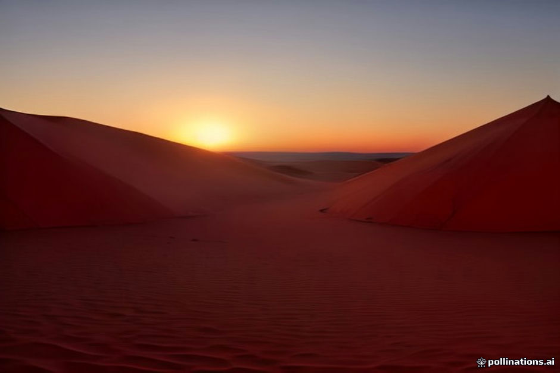
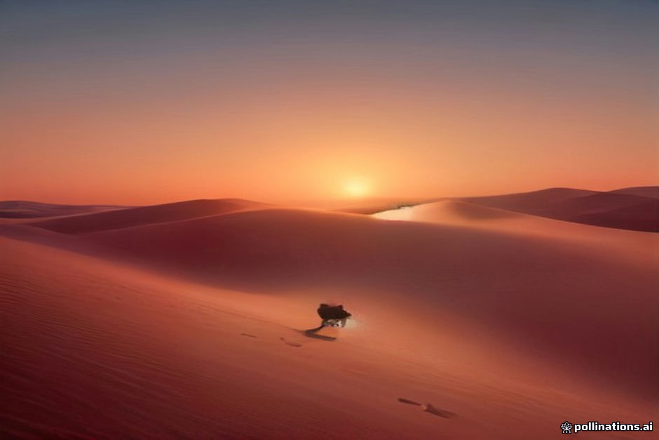

Booking a desert excursion to Erg Chebbi often feels overwhelming. Flashy websites display identical photos of sand dunes, Berber tents, and camels under starry skies, but prices vary wildly from €80 to €600 per person. To understand what you are actually paying for, you need to look past promotional claims and ask precise logistical questions before sending a deposit.
While our guide on how to avoid tour scams covers obvious red flags like fake desert destinations in Zagora, this checklist focuses on operational details. Asking these seven questions directly will reveal whether an operator values guest comfort, ethical animal handling, and clear communication.
1. Camp Location & 2. Bathroom Facilities
Ask where the camp sits relative to Merzouga and the main dune field. Budget camps are often pitched right behind roadside hotels, meaning you will hear distant highway traffic and see streetlights on the horizon. Deeper camps inside the Erg Chebbi dunes require a longer camel trek or 4x4 drive, providing total quiet and darker skies for stargazing.
Clarify the exact bathroom setup. Is it a shared concrete block outside the camp, a communal tent, or an en-suite bathroom inside your tent? Before booking, ask if hot water is guaranteed year-round or powered strictly by small solar heaters that run cold on cloudy winter mornings. See our camp tier comparison for detailed specs on standard versus luxury setups.
- Ask for the approximate distance or travel time from the tarmac road to the camp.
- Confirm whether toilets are flush toilets or dry bucket systems.
- Check whether showers are private or shared among multiple guest tents.
3. Group Sizes & 4. Guide Qualifications
Confirm how many people will be in your transport vehicle and at the desert camp. Shared minibus tours often pack 14 to 17 passengers into a tight vehicle for the nine-hour drive from Marrakesh. Private tours or small-group trips limit occupancy to six or fewer, offering significantly better legroom and air conditioning control.
Inquire about your driver and local guide. On budget group transfers, the driver functions solely as transport, speaking basic English or French, with no formal guiding role during the journey. Dedicated local guides provide context at historical stops like Ait Ben Haddou and manage logistics smoothly. Decide whether you prefer a private vs shared tour based on your desired travel pace.
5. Camel Workload & Working Conditions
Ask how the operator manages animal welfare during the dune trek. Responsible companies limit riding times to around one hour per trek, carry heavy luggage in 4x4 support vehicles rather than on the camels' backs, and rest animals during peak afternoon heat.
If you prefer not to ride, ensure 4x4 transfer alternatives are included without surprise fees. Read our guide on camel trekking ethics or review no-camel desert tour options if anyone in your group has mobility concerns or back pain.
6. Dietary Requirements & 7. Cancellation Terms
Desert meals are usually fixed tagines and soups. If you follow a specific diet, ask how the camp handles it before arriving in Merzouga. Proper kitchens comfortably accommodate plant-based meals if notified in advance, as detailed in our guide to vegetarian meals in the desert.
Finally, request written clarification on cancellation and refund policies. Desert roads through the High Atlas mountains can occasionally close due to winter snow or flash floods. Understand what happens to your deposit if weather forces a route change or delay, and verify what is included in the baseline desert tour cost.
| Vetting Area | Budget / Standard Operators | Mid-Range & Private Operators |
|---|---|---|
| Camp Location | Edge of dunes near road; ambient light visible | Deep in Erg Chebbi dunes; dark skies and quiet |
| Bathrooms | Shared outdoor facilities, limited hot water | Private en-suite with dependable plumbing |
| Vehicle Capacity | 14–17 passenger shared minibuses | Private 4x4 or max 6–8 passenger vans |
| Camel Welfare | Heavy luggage on camels, multiple daily runs | 4x4 baggage support, strict rotation and rest |
| Dietary Options | Standard meat tagines; limited substitutions | Dedicated vegetarian or vegan menus on request |
| Cancellation Terms | Non-refundable deposits, strict penalties | Flexible rescheduling or clear weather policies |

Illustration, not a photograph — for the real thing, you'll have to stand on the ridge yourself.
Quick answers
A few follow-up questions travelers ask about this.
Is a deposit required when booking a desert tour?
Yes, most legitimate operators require a 20% to 30% deposit via PayPal, bank transfer, or credit card to reserve your driver and camp tent. The remaining balance is typically paid in cash upon arrival.
What happens if snow closes the Tizi n'Tichka mountain pass in winter?
Professional operators monitor mountain weather closely. If the main Atlas pass is temporarily blocked, they will adjust departure times or arrange alternative routing, whereas budget line operators may cancel without logistics support.
How far in advance should I ask these questions and book?
For peak travel months (October–November and March–April), ask your questions and reserve 2 to 3 months in advance. Mid-range camps with private en-suite bathrooms sell out early during these periods.
Planning your own route?
Tell us your dates and what matters to you — we'll answer with a straight recommendation, not a brochure.
Send an inquiry See the itineraries